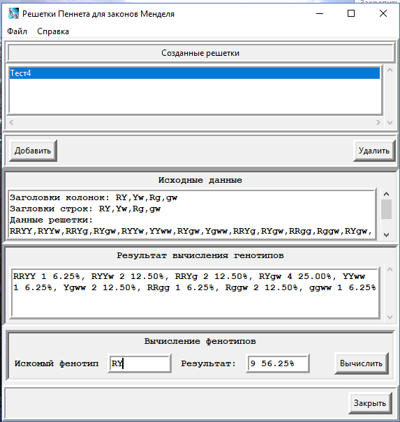

Главное окно программы
Главное окно программы разделено на четыре рабочие части.
В верхней части окна находится список созданных в программе решеток Пеннета. Там же находятся две программные кнопки,
позволяющие добавлять новую решетку или удалять, ранее созданную.
Ниже находится область исходных данных, использованных при создании решетки, и результат построения решетки по этим данным.
Еще ниже представлено поле, в котором размещен результат вычисления генотипов, полученных из данной решетки.
Параметры результата вычисления конкретного генотипа имеет вид: RRYY 1 6.25%, где RRYY – генотип,
1 – количество этих генотипов в данном скрещивании, 6.25% - процентное отношение данного генотипа
к общему числу результатов данного скрещивания.
В последней рабочей области представлен инструмент для вычисления конкретного, необходимого нам фенотипа.
Формат результата тот же, что и у генотипа.
Меню программы представлено двумя разделами «Файл» и «Справка».
Раздел «Файл» позволяет сохранить во внешнем файле результаты работы со всеми созданными решетками,
и, соответственно, воспроизвести вновь эти результаты из сохраненного файла.
Раздел «Справка» позволяет получить, то, что вы сейчас читаете, руководство по работе с программой а,
в пункте «О Программе» диалоговое окно со сведениями об авторе программы.
Порядок работы с программой
При нажатии на кнопку «Добавить» появляется диалоговое окно, в котором надо заполнить параметры новой решетки
Необходимо указать требуемый размер решетки. Заголовок окна этой решетки является обязательным параметром.
Так как по этому заголовку эта решетка будут идентифицироваться в списке созданных решеток главного окна программы.
Заголовки колонок и строк решетки заполняются через запятую без пробелов между ними.
У окна «Параметры новой решетки» имеется многофункциональное меню.

Это меню позволяет: при ошибочном наборе очистить заголовки; заполнит заголовки из файла результатов,
ранее сохраненной, конкретной решетки; заполнить заголовки из результатов конкретной уже имеющейся
в списке решетки. В последнем случае появляется диалоговое окно с дубликатом списка решеток главного
окна программы, одну из которых надо выбрать.
После заполнения параметров решетки и нажатия на кнопку «Создать» появится диалоговое окно новой решетки
с заполненными заголовками строк и колонок.

После нажатия на кнопку «Построить» программа построит решетку Пеннета на основе заголовков колонок и строк.
У этого окна так же имеется меню, позволяющее сохранить результат данной конкретной решетки для его
последующего использования, очистить заголовки или данные построения. Кром того вы могли бы
на предыдущем этапе, заполнения параметров новой решетки, определить только размер решетки и
заголовок окна, оставив пустыми заголовки колонок и строк. Затем, используя пункт меню
«Использовать результат», заполнить заголовки колонок и строк из результата, предварительно
сохранённой, ранее созданной решетки.
После нажатия кнопки «Закрыть», это диалоговое окно закроется и в главном окне программы,
в списке созданных решеток, появится строка с наименованием этой решетки. При выборе ее
в этом списке будут отображены ее параметры и результаты вычисления вероятностей генотипов.
Относительно вероятностей фенотипов, мы можем всегда можем ее рассчитать, указав конкретный требуемый фенотип.
Пример: Составление решетки Пеннета в дигибридном скрещивании.
При дигибридном скрещивании исследуется наследование двух генов. Пусть мы имеем два гена – Формы и Цвета.
Гладкую форму определяет доминантный алель S (smooth – гладкий, ровный),
а морщинистую рецессивный алель w (wrinkled – морщинистый). Для цвета Y (yellow – желтый) доминантный алель.
и g (green – зеленый) рецессивный алель. Получим следующую решетку.
Таким образом гетерозиготные растения могут дать четыре типа гамет со всеми возможными комбинациями:
SY, Sg, Yw, gw. Теперь составим решетку Пеннета для генотипов, размерностью 4Х4.
При этом при заполнении заголовков колонок и строк решетки используем результаты предыдущего построения.
Получим следующую решетку.
Выделив в списке решеток эту решетку, мы получим соотношения и вероятности по генотипам:
А так как доминантные признаки маскируют рецессивные, то соотношения и вероятности по фенотипам мы получим такие:
SY (гладкие, желтые) – 9 56.25% (девять случаев из 16, вероятность 56.25%);
Sgg (гладкие, зеленые) 3 18.75%;
wwY (морщинистые, желтые) 3 18.75%;
wwgg (морщинистые, зеленые) 1 6.25%.
Пример: Составление решетки Пеннета в тригибридном скрещивании.
Рассмотрим более сложный пример по трем генам.
Положим у нас имеется три гена A,a; B,b; C,c. Составим решетку Пеннета для первых двух.
Затем, на основе этих результатов, построим решетку с учетом третьего.
Задаем решетку размерностью 4Х4, заголовки колонок установим C,c,
а заголовки строк заполним на основе результатов предыдущего построения. Получим следующую решетку.

Теперь составим решетку для генотипов, она будет иметь размерность 8Х8.
Опять же для заголовка колонок и строк новой решетки используем результат предыдущего построения.
Получим следующую решетку
Выделив эту решетку в списке созданных, мы увидим результат вычислений соотношений и вероятностей генотипов
для данного скрещивания.
AABBCC 1 1.56%, AABBCc 2 3.12%, AaBBCC 2 3.12%, AaBBCc 4 6.25%, AABbCC 2 3.12%, AABbCc 4 6.25%,
AaBbCC 4 6.25%, AaBbCc 8 12.50%, AABBcc 1 1.56%, AaBBcc 2 3.12%, AABbcc 2 3.12%, AaBbcc 4 6.25%,
BBCCaa 1 1.56%, BBCcaa 2 3.12%, BbCCaa 2 3.12%, BbCcaa 4 6.25%, BBaacc 1 1.56%, Bbaacc 2 3.12%,
AACCbb 1 1.56%, AACcbb 2 3.12%, AaCCbb 2 3.12%, AaCcbb 4 6.25%, AAbbcc 1 1.56%, Aabbcc 2 3.12%,
CCaabb 1 1.56%, Ccaabb 2 3.12%, aabbcc 1 1.56%.
Вводя соответствующие фенотипы, рассчитаем их соотношения и вероятности:
ABC 27 42.19%; AbbC 9 14.06%; aaBC 9 14.06%; aabbC 3 4.69%;
ABcc 9 14.06%; Abbcc 3 4.69%; aaBcc 3 4.69%; aabbcc 1 1.56%.